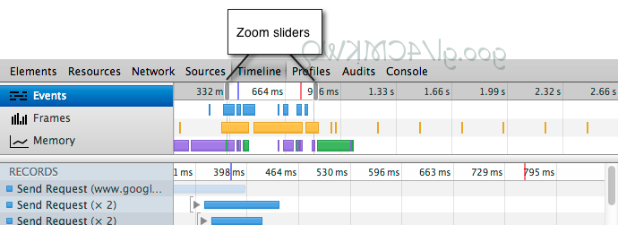

The Timeline panel lets you record and analyze all the activity in your application as it runs. It's the best place to start investigating perceived performance issues in your application.
The Timeline has three primary sections: an overview section at the top, a records view, and a toolbar.
During a recording, a record for each event that occurs is added to the Records view in a "waterfall" presentation. Records are categorized into one of four basic groups: Loading, Scripting, Rendering, and Painting. These records are color-coded as follows:

For example, the recording below is of an HTML page being loaded into Chrome. The first record (Send Request) is Chrome's HTTP request for the page, followed by a Receive Response record (for the corresponding HTTP response), some Receive Data records (for the actual page data), and then a Finish Loading record. For a complete list of events recorded by Timeline and their descriptions, see the Timeline event reference.

When you hover over a Timeline record, a pop-up appears with details about the associated event. For example, the screenshot below shows details for a Finish Loading record associated with an image resource. The Timeline event reference explains the details available for each record type.

In addition to the detailed Records view, you can inspect recordings in one of three modes:
The Events mode provides an overview of all events that were captured during the recording, organized by their type. At a glance, you can see where your application is spending the most time, and on what types of tasks. The length of each horizontal bar in this view corresponds to time that event took to complete.

When you select a range of time from the Events view (see Zooming in on a Timeline section), the Records view is restricted to only show those records.

Frames mode provides insight into the rendering performance of your application. A "frame" represents the work the browser must do to render a single frame of content to the display—run JavaScript, handle events, update the DOM and change styles, layout and paint the page. The goal is for your app to run at 60 frames per second (FPS), which corresponds to the 60Hz refresh rate of most (but not all) video displays. Consequently, your application has approximately 16.6 ms (1000 ms / 60) to prepare for each frame.
Horizontal lines across the Frames view represent frame rate targets for 60 FPS and 30 FPS. The height of a frame corresponds to the time it took to render that frame. The colors filling each frame indicate the percentage of time taken on each type of kind of task.
The time to render a frame is displayed atop of the Records view. If you hover over the displayed time, additional information appears about the frame, including the time spent on each type of task, CPU time, and the calculated FPS.

See Timeline demo: Diagnosing and fixing forced synchronous layout for a demonstration of using Frames mode.
You may notice regions of a frame that are light-gray or clear (hollow). These regions indicate, respectively:
The frames in the recording below show both un-instrumented activity and idle time.

The average frame rate and its standard deviation represented are displayed along the bottom of the Timeline panel for the selected frame range. If you hover over the average frame rate, a pop-up appears with additional information about the frame selection:

The Memory view shows you a graph of memory used by your application over time and maintains a counter of the number of documents, DOM nodes, and event listeners that are held in memory (that is, that haven’t been garbage collected).

Memory mode can't show you exactly what is causing a memory leak, but it can help you identify what events in your application may be leading to a memory leak. You can then use the Heap Profiler to identify the specific code that is causing the leak.
To make a recording, you start a recording session, interact with your application, and then stop recording. It helps to know in advance the kind of activity you want to record — for example, page loading, scrolling performance of a list of images, and so forth, and then stick to that script.
To make a recording:

The Record button turns red during a recording. 
A common task is to record a page loading from the initial network request. Keyboard shortcuts are useful in this scenario, as they let you quickly start a recording, re-load the page, and stop the recording.
To record a page load:
Your recording should look something like the following. The first record (Send Request) is Chrome's HTTP request for the page, followed by a Receive Response record for the corresponding HTTP response, followed by one or more Receive Data records, a Finish Loading record, and a Parse HTML record.
See the Timeline event reference for details on each record type.
Here are some tips for making recordings:
Disable extensions. Chrome extensions can add unrelated noise to Timeline recordings of your application. You can do one of the following:
This section provides tips for analyzing Timeline recordings.
When you hover your mouse over a record in the Timeline, a pop-up appears with additional information about the event.

Certain details are present in events of all types, such as Duration and CPU Time, while some only apply to certain event types. For information on what details each kind of record contains, see the Timeline event reference.
When you hover over a Paint record, DevTools highlights the region of the screen that was updated with a blue semi-transparent rectangle, as shown below.

The Timeline annotates each recording with a blue and a red line that indicate, respectively, when the DOMContentLoaded and load events were dispatched by the browser. The DOMContentLoaded event is fired when all of the page’s DOM content has been loaded and parsed. The load event is fired once all of the document’s resources (images and CSS files, and so forth) have been fully loaded.

Layout is the process by which Chrome calculates the positions and sizes of all the elements on the page. Normally, Chrome performs layouts "lazily" in response to CSS or DOM updates from your application. This allows Chrome to batch style and layout changes rather than reacting to each on demand. However, an application can force Chrome to perform a layout immediately and asynchronously by querying the value of certain layout-dependent element properties such as element.offsetWidth. These so called "forced synchronous layouts" can be a big performance bottleneck if repeated frequently or performed for large DOM tree.
The Timeline identifies when your application causes a forced asynchronous layout and marks such records with yellow warning icon ( ). When you hover over the record, a pop-up appears that contains a stack trace of the offending code.
). When you hover over the record, a pop-up appears that contains a stack trace of the offending code.

If a record contains a child record that forced a layout, the parent record is marked with a slightly dimmed yellow icon. Expand the parent record to locate the child record that caused the forced layout.

See the Forced Synchronous Layout demo for a demonstration of detecting and fixing these kinds of performance issues.
Events in Timeline recordings sometimes are nested visually beneath another event. You expand the "parent" event to view its nested "child" events. There are two reasons why the Timeline nests events:
Note: Glue mode is automatically disabled in Frames mode.
The following screenshot shows an example of nested synchronous events. In this case, Chrome was parsing some HTML (the Parse HTML event) when it found several external resources that needed to be loaded. Those requests were made before Chrome has finished the parsing, so the Send Request events are displayed as children of the Parse HTML event.

Many events in an application are the result of asynchronous operations. A loading of an image resource page results in a Send Request, followed by a Receive Response event, one or more Receive Data loading events, and a Finish Loading event. Sometimes, async events are separated from their causes by enough time to make correlating them difficult.
The Glue asynchronous events to causes toggle at the bottom of the Timeline panel causes asynchronous events to be nested as children of the event that caused them.

Timeline bars are color coded as follows:

When you hover over a parent record, the following information is displayed:

You can filter the records shown according to their type (only show loading events, for example), or only show records longer or equal to 1 millisecond or 15 milliseconds.

You can also search records for a particular string by pressing Ctrl+F (Window/Linux) or Cmd+F (Mac), while the Timeline has focus. You can optionally filter records to only show those that contain the search term.

To make analyzing records easier, you can “zoom in” on a section of the timeline overview, which reduces accordingly the time scale in the Records view.

To zoom in on a Timeline section, do one of the following:
Here are some more tips for working with Timeline selections:

Trackpad users:
Scrolling the mouse wheel up or down while hovering over a Timeline selection expands and contracts the selection, respectively.
You can save a Timeline recording as a JSON file, and later open it in the Timeline.
To save a Timeline recording:
To open an existing Timeline recording file, do one of the following:

Applications can add their own events to Timeline recordings. You can use the
console.timeStamp() method to add an atomic event to a recording, or the
console.time() and
console.timeEnd() methods
to mark a range of time that code was executing. For example, in the following recording the console.timeStamp() was used to display an "Adding result" event. See Marking the Timeline in
Using the Console for more information.

You can overlay CPU activity in Timeline recordings by enabling the Show CPU activity on the ruler option in DevTools settings.

When this option is enabled, light gray bars appear above the Timeline records, indicating when the CPU was busy. Hovering over a CPU bar highlights the Timeline region during which the CPU was active (as shown below). The length of a CPU bar is typically the sum of all the (highlighted) events below it in the Timeline. If these don't match, it may be due to one of the following:
setTimeout() call).
This section lists and describes the individual types of records that are generated during a recording, organized by type, and their properties.
Certain details are present in events of all types, while some only apply to certain event types. This section lists properties common to different event types. Properties specific to certain event types are listed in the references for those event types that follow.
Aggregated time : For events with nested events, the time taken by each category of events.
Call Stack : For events with child events, the time taken by each category of events.
CPU time : How much CPU time the recorded event took.
Details : Other details about the event.
Duration (at time-stamp) : How long it took the event with all of its children to complete; timestamp is the time at which the event occurred, relative to when the recording started.
Self time : How long the event took without any of its children.
Used Heap Size : Amount of memory being used by the application when the event was recorded, and the delta (+/-) change in used heap size since the last sampling.
This section lists events that belong to Loading category and their properties.
| Event | Description |
|---|---|
| Parse HTML | Chrome executed its HTML parsing algorithm. |
| Finish Loading | A network request completed. |
| Receive Data | Data for a request was received. There will be one or more Receive Data events. |
| Receive Response | The initial HTTP response from a request. |
| Send Request | A network request has been sent. |
Resource : The URL of the requested resource.
Preview : Preview of the requested resource (images only).
Request Method : HTTP method used for the request (GET or POST, for example).
Status Code : HTTP response code
MIME Type : MIME type of the requested resource.
Encoded Data Length : Length of requested resource in bytes.
This section lists events that belong to the Scripting category and their properties.
| Event | Description |
|---|---|
| Animation Frame Fired | A scheduled animation frame fired, and its callback handler invoked. |
| Cancel Animation Frame | A scheduled animation frame was canceled. |
| GC Event | Garbage collection occurred. |
| DOMContentLoaded | The DOMContentLoaded was fired by the browser. This event is fired when all of the page’s DOM content has been loaded and parsed. |
| Evaluate Script | A script was evaluated. |
| Event | A JavaScript event ("mousedown", or "key", for example). |
| Function Call | A top-level JavaScirpt function call was made (only appears when browser enters JavaScript engine). |
| Install Timer | A timer was created with setInterval() or setTimeout(). |
| Request Animation Frame | A requestAnimationFrame() call scheduled a new frame |
| Remove Timer | A previously created timer was cleared. |
| Time | A script called console.time()) |
| Time End | A script called console.timeEnd() |
| Timer Fired | A timer fired that was scheduled with setInterval() or setTimeout(). |
| XHR Ready State Change | The ready state of an XMLHTTPRequest changed. |
| XHR Load | An XMLHTTPRequest finished loading. |
Timer ID : The timer ID.
Timeout : The timeout specified by the timer.
Repeats : Boolean that specifies if the timer repeats.
Function Call : A function that was invoked.
This section lists events that belong to Rendering category and their properties.
| Event | Description |
|---|---|
| Invalidate layout | The page layout was invalidated by a DOM change. |
| Layout | A page layout was executed. |
| Recalculate style | Chrome recalculated element styles. |
| Scroll | The content of nested view was scrolled. |
Layout invalidated : For Layout records, the stack trace of the code that caused the layout to be invalidated.
Nodes that need layout : For Layout records, the number of nodes that were marked as needing layout before the relayout started. These are normally those nodes that were invalidated by developer code, plus a path upward to relayout root.
Layout tree size : For Layout records, the total number of nodes under the relayout root (the node that Chrome starts the relayout).
Layout scope : Possible values are "Partial" (the re-layout boundary is a portion of the DOM) or "Whole document".
Elements affected : For Recalculate style records, the number of elements affected by a style recalculation.
Styles invalidated : For Recalculate style records, provides the stack trace of the code that caused the style invalidation.
This section lists events that belong to Painting category and their properties.
| Event | Description |
|---|---|
| Composite Layers | Chrome's rendering engine composited image layers. |
| Image Decode | An image resource was decoded. |
| Image Resize | An image was resized from its native dimensions. |
| Paint | Composited layers were painted to a region of the display. Hovering over a Paint record highlights the region of the display that was updated. |
Location : For Paint events, the x and y coordinates of the paint rectangle.
Dimensions : For Paint events, the height and width of the painted region.
{{/partials.standard_devtools_article}}